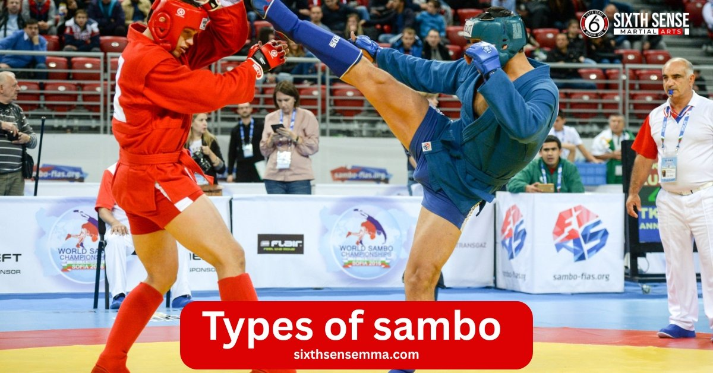
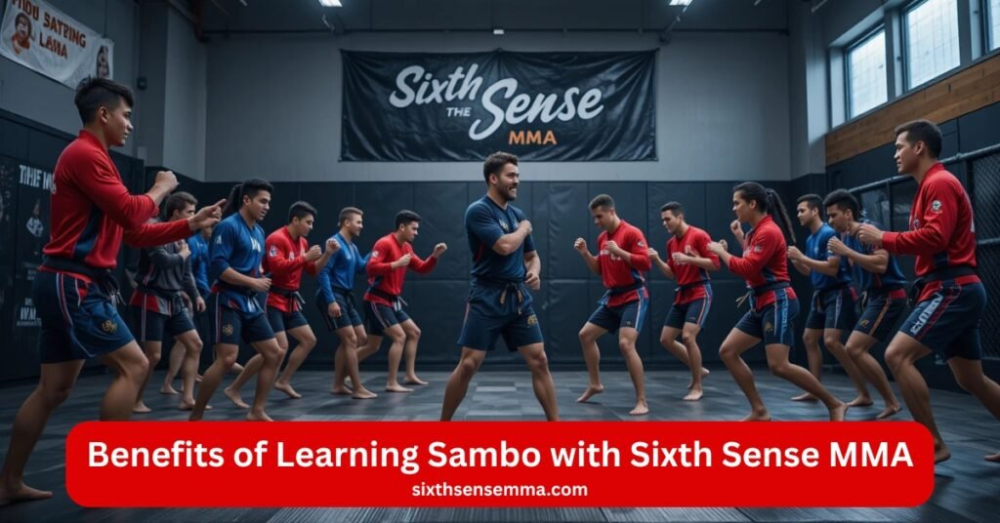
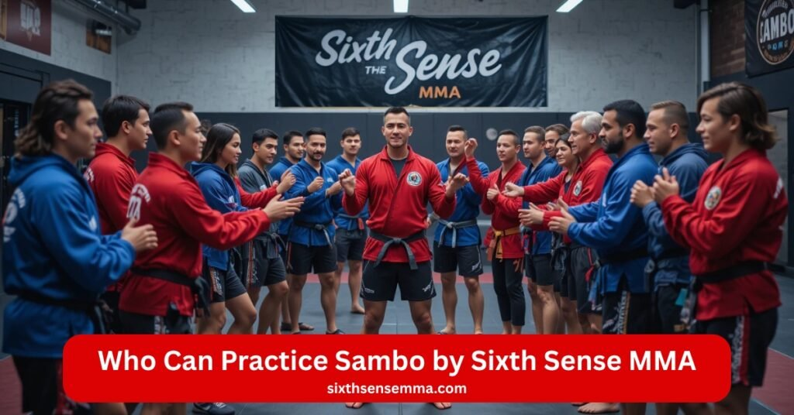

Top 5 Types of Sambo Learn Russian Martial Art

Types of sambo start every journey at SixthSenseMMA. Sambo mixes old folk wrestling styles with judo throws. Sambo is a russian martial born for red army soldiers. Father of sambo pulled from variety of martial arts. Russian martial art developed fast in 1920s. Sambo is relatively modern yet strong. Fila accepted sambo back in 1968. Federation international amateur sambo runs big shows. Sambo world brings countries together. Sambo is about defending oneself on street or mat. Sambo teaches quick grapple and submission. Sambo allows hard striking and grappling. Combat sport full power. Martial art and combat sport fit body mind. Sambo uniform jacket shorts shoes. Sambo skills grow daily.
Main Types of Sambo
Types of sambo split clear paths. Type of sambo picks your aim. Kind of sambo suits need. Style of sambo sets rules. Version of sambo changes gear. Sambo combat hits hard. Combat sambo allows striking techniques. Sambo allows leg locks. Types of leg locks vary by type. Combat techniques rule combat sambo. Sport sambo and combat sambo lead pack. Combat and freestyle sambo add flavor. Judo and sambo share throws. Martial arts like freestyle wrestling blend. Sambo fighters pick one. Amateur sambo keeps clean. Restrictions on gripping and holds apply sport. Permitted in sport sambo limits strikes. Boyevoye sambo means combat sambo. Developed for the military early on. Official combat sport now. Sambo world hosts all. Combat sambo competitions full power. Combat sambo championships crown tough. World combat sambo top level. Russian sambo roots strong. Sambo practitioners train daily.
- Sport Sambo
- Combat Sambo
- Freestyle Sambo
- Self-Defense Sambo
- Special Military Sambo
Sport Sambo
Sport sambo bans strikes. Sport sambo focuses grapple. Sport sambo uses submission. Sport sambo loves throws. Wrestling style heavy. Freestyle wrestling close kin. Judo throws mix. Leg locks allowed. Types of leg locks heel hooks. Restrictions on gripping and holds keep fair. Permitted in sport sambo ground wins. Sambo championships big for sport sambo. National sambo teams shine. Amateur sambo clean play. Sambo uniform red blue kurtka. Sambo practitioners score points. Sambo techniques pin or submission. Sambo training mat time. Sambo events sport rules. World sambo medals here. Russian sambo masters sport sambo. Sambo wrestlers throw far. Martial art competition safe. Sambo skills build quick. Participate in sambo tournaments. Sambo world sport stage.
Combat Sambo
Combat sambo adds punches. Combat sambo allows kicks. Combat sambo full striking techniques. Combat sambo keeps grapple. Combat sambo mixes striking and grappling. Combat sambo is designed for fight. Boyevoye sambo old name. Developed for the military red army. Combat techniques head strikes. Leg locks all in. Types of leg locks straight ankle. Combat sambo allows mma feel. Resembles modern mixed martial arts. Combat sambo resembles mixed martial arts. Sambo fighters hit hard. Combat sambo competitions intense. Combat sambo championships brutal. World combat sambo pro level. World combat sambo federation runs. Sambo events combat draw. Russian sambo combat strong. Sambo practitioners wear helmet. Sambo uniform shorts shin guards. Hand-to-hand combat techniques real. Sambo training spar full. Official combat sport army base. Founder of sambo war focus.
Freestyle Sambo
Freestyle sambo opens rules. Freestyle sambo no strike ban. Freestyle sambo adds leg locks. American sambo association pushed freestyle sambo. Introduced by the american sambo in 2004. Freestyle sambo blends free. Wrestling style loose. Judo less grip. Submission wide open. Types of leg locks knee bars. Sambo techniques mix wild. Sambo training creative. Sambo practitioners experiment. Sambo events freestyle rare. Sambo fighters cross train. Martial arts style open book. Sambo skills adapt fast. Participate in sambo free style. American sambo association in 2004 grew it. Freestyle wrestling base add. Combat and freestyle sambo close. Sambo world tests freestyle.
Self-Defense Sambo
Self-defense sambo street real. Self-defense sambo no rules. Self-defense without weapons core. Self-defense sambo quick end. Combat techniques dirty. Striking and grappling surprise. Leg locks street ban. Types of leg locks escape focus. Sambo teaches awareness. Sambo is about defending oneself. Sambo training scenario drill. Sambo practitioners walk safe. Hand-to-hand combat techniques grab break. Russian martial art self base. Martial art protection first. Sambo skills life save. Form of sambo without competing daily use. Sambo events no self. Sambo fighters prep real. Traditional folk styles street mix. Sambo is highly practical. Sambo as well fits home.
Special Military Sambo
Special sambo army only. Special sambo secret tools. Developed for the military elite. Combat sambo base add. Striking techniques weapon tie. Grapple disarm fast. Submission silent win. Leg locks control hold. Types of leg locks break free. Sambo techniques knife defend. Sambo training field sim. Red army old school. Russian sambo military root. Sambo practitioners soldiers. Hand-to-hand combat techniques war ready. Official combat sport troop train. Sambo world no special. Sambo events closed door. Founder of sambo military mind. Martial arts style mission fit. Sambo skills survive push. Combat sport duty call. Sambo is a russian martial force strong.
Differences Between the Types of Sambo
| Type | Primary Purpose | Techniques | Striking Allowed | Target Audience |
|---|---|---|---|---|
| Sport Sambo | Competition | Throws, holds, submissions | No | Athletes, competitors |
| Combat Sambo | Military / Police | Punches, kicks, grappling | Yes | Soldiers, security |
| Freestyle Sambo | Hybrid training | Chokes, locks, throws | Partial | Experienced practitioners |
| Self-Defense Sambo | Real-life safety | Escapes, control moves | Minimal | Civilians |
| Military Sambo | Tactical combat | Strikes, weapons, takedowns | Yes | Military, special forces |

Benefits of Learning Sambo
Types of sambo bring big gains at SixthSenseMMA. Sambo boosts body and mind. Sambo is a martial full power. Russian martial art builds tough. Combat sport tests all. Grapple hard daily. Submission sharp win. Leg locks twist strong. Types of leg locks control fast. Striking and grappling mix fit. Sambo allows full move. Sambo training sweat real. Sambo techniques life change. Sambo practitioners grow quick. Participate in sambo class fun. Sambo events inspire push. World sambo goal high. Sambo championships medal dream.
Improves Physical Strength, Balance, and Agility
Sambo lifts heavy. Sport sambo throw build. Combat sambo strike power. Freestyle sambo twist core. Self-defense sambo run fast. Special sambo carry load. Grapple pull muscle. Submission hold tight. Leg locks hip drive. Types of leg locks ankle flex. Striking and grappling full range. Sambo allows jump high. Sambo training drill speed. Sambo techniques balance test. Wrestling style stance low. Judo hip snap. Freestyle wrestling sprawl quick. Combat techniques punch snap. Hand-to-hand combat techniques foot work. Sambo practitioners agile move. Sambo fighters strong lift. Martial art body forge. Sambo skills climb wall. Russian martial art endurance long. SixthSenseMMA gym push.
Builds Mental Toughness, Focus, and Confidence
Sambo breaks fear. Sport sambo point chase. Combat sambo hit face. Freestyle sambo rule bend. Self-defense sambo street calm. Special sambo mission steel. Grapple mind lock. Submission tap wise. Leg locks pain push. Types of leg locks breath hold. Striking and grappling switch fast. Sambo allows no quit. Sambo training rep hard. Sambo techniques plan deep. Restrictions on gripping and holds adapt quick. Permitted in sport sambo strategy win. Sambo practitioners eye sharp. Sambo fighters chest high. Martial art and combat sport grit grow. Sambo skills talk bold. Effectiveness of this martial art trust self. Russian sambo warrior heart. SixthSenseMMA coach cheer.
Develops Practical Self-Defense Skills
Sambo stops threat. Self-defense sambo grab break. Combat sambo punch back. Freestyle sambo improvise tool. Special sambo disarm gun. Self-defense without weapons core win. Grapple pull close. Submission choke out. Leg locks trip fall. Types of leg locks knee bar. Striking and grappling surprise hit. Sambo allows elbow free. Sambo training dark drill. Sambo techniques escape tight. Hand-to-hand combat techniques real fight. Combat techniques knee strike. Sambo is about defending oneself. Sambo practitioners walk safe. Sambo fighters protect own. Martial art street ready. Sambo skills family guard. Russian martial art life save. SixthSenseMMA scenario run.
Suitable for Both Men and Women of All Levels
Sambo fits all. Sport sambo beginner throw. Combat sambo women kick. Freestyle sambo teen twist. Self-defense sambo mom learn. Special sambo pro train. Grapple size beat. Submission leverage win. Leg locks small strong. Types of leg locks all body. Striking and grappling level play. Sambo allows start slow. Sambo training group mix. Sambo techniques adjust power. Sambo uniform same wear. Martial artists join free. Sambo practitioners age wide. Sambo fighters gender equal. Martial art and combat sport door open. Sambo skills grow own. Participate in sambo any day. Russian sambo welcome mat. SixthSenseMMA family class.
Strong Foundation for MMA, Judo, and Other Combat Sports
Sambo feeds big. Mma take sambo techniques. Judo share throws. Mixed martial arts love leg locks. Combat sport base solid. Grapple mma ground. Submission cage end. Types of leg locks ufc win. Striking and grappling combat sambo. Sambo allows cross train. Sambo training pro prep. Wrestling style takedown chain. Freestyle wrestling sprawl add. Judo and sambo gi grip. Combat and freestyle sambo mma mix. Resembles modern mixed martial arts. Sambo fighters cage ready. World combat sambo mma path. American sambo association bridge build. Sambo skills belt climb. Martial arts style root deep. Russian martial art champ make. SixthSenseMMA mma door.

Who Can Practice Sambo
Types of sambo welcome every body at SixthSenseMMA. Sambo fits fresh start or pro edge. Sambo is a martial open door. Russian martial art builds all. Combat sport tests any level. Grapple new hands. Submission teach quick. Leg locks twist safe. Types of leg locks start slow. Striking and grappling mix easy. Sambo allows join today. Sambo training group warm. Sambo techniques scale power. Sambo practitioners age mix.
Complete Beginners Interested in Martial Arts
Sambo starts zero. Sport sambo basic throw. Combat sambo light tap. Freestyle sambo easy roll. Self-defense sambo simple grab. Special sambo watch first. Grapple partner guide. Submission arm hold. Leg locks foot play. Types of leg locks heel touch. Striking and grappling air drill. Sambo allows slow pace. Sambo training step one. Sambo techniques fall safe. Wrestling style stance learn. Judo hip feel. Freestyle wrestling base build. Combat techniques shadow soft. Hand-to-hand combat techniques walk calm. Sambo practitioners new smile. Sambo fighters cheer start. Martial art first day. Sambo skills week gain. Russian martial art welcome hug. SixthSenseMMA hand hold.
Professional Fighters and Competitive Athletes
Sambo sharpens edge. Sport sambo point hunt. Combat sambo full spar. Freestyle sambo rule twist. Self-defense sambo street add. Special sambo pro tool. Grapple chain long. Submission cage win. Leg locks ufc lock. Types of leg locks knee reap. Striking and grappling pro mix. Sambo allows hard go. Sambo training camp fire. Sambo techniques medal plan. Restrictions on gripping and holds game read. Permitted in sport sambo score high. Sambo practitioners belt chase. Sambo fighters podium stand. Martial art and combat sport title path. Sambo skills champ build. Effectiveness of this martial art ring prove. Russian sambo pro root. SixthSenseMMA corner call.
Law Enforcement and Military Personnel
Sambo duty ready. Self-defense sambo grab end. Combat sambo strike control. Freestyle sambo improvise fast. Special sambo mission fit. Self-defense without weapons job win. Grapple cuff quick. Submission hold safe. Leg locks trip down. Types of leg locks ankle turn. Striking and grappling vest hit. Sambo allows real force. Sambo training scenario run. Sambo techniques disarm gun. Hand-to-hand combat techniques badge save. Combat techniques knee drive. Developed for the military red army base. Sambo practitioners uniform proud. Sambo fighters protect serve. Martial art force strong. Sambo skills shift guard. Russian martial art troop train. SixthSenseMMA duty class.
Fitness Enthusiasts Looking for Full-Body Training
Sambo burns all. Sport sambo cardio throw. Combat sambo power punch. Freestyle sambo core twist. Self-defense sambo sprint drill. Special sambo load carry. Grapple muscle pull. Submission plank hold. Leg locks hip thrust. Types of leg locks bridge up. Striking and grappling circuit run. Sambo allows sweat free. Sambo training heart race. Sambo techniques flex full. Wrestling style squat deep. Judo lift high. Freestyle wrestling sprawl burn. Combat techniques bag hit. Sambo practitioners tone fast. Sambo fighters lean strong. Martial art and combat sport gym swap. Sambo skills mirror pose. Russian sambo endurance build. SixthSenseMMA fit goal.
Youth and Teenagers Building Discipline and Confidence
Sambo shapes young. Sport sambo kid throw. Combat sambo light hit. Freestyle sambo teen roll. Self-defense sambo bully stop. Special sambo watch grow. Grapple friend play. Submission tap laugh. Leg locks foot game. Types of leg locks safe twist. Striking and grappling pad fun. Sambo allows age group. Sambo training rule learn. Sambo techniques focus sharp. Hand-to-hand combat techniques respect earn. Sambo practitioners belt tie. Sambo fighters chest out. Martial art homework done. Sambo skills school bold. Russian martial art young root. Participate in sambo team join. Sambo world future champ. SixthSenseMMA youth mat.
Why Sixth Sense MMA Is Better Than Other Martial Arts Academies
SixthSenseMMA stands tall in Coppell TX. Mma classes draw crowds. Kickboxing sessions pack mats. Types of sambo add edge. Sambo roots deep here. Sambo is a martial full blend. Russian martial art trains smart. Combat sport builds winners. Mma fighter sharpens daily. Punch lands clean. Grapple pulls strong. Submission ends quick. Takedowns drop sure. Ground fighting controls tight. Striking and grappling mix power.
Experienced Coaches with Real Fight and Competition Background
SixthSenseMMA coaches fought cages. Mma pros corner here. Kickboxing champs teach stand. Sambo black belts roll. Sambo is a russian martial expert guide. Combat sport scars show. Mma fighter ufc path. Punch ring tested. Grapple tourney won. Submission belt black. Takedowns slam pro. Ground fighting guard pass. Striking and grappling coach blend. Shin check battle. Elbow cut scar. Head strikes dodge life. Strikes to the head block vet. Blows to the head slip old. Repetitive head coach knows. Head shots feint pro.
Structured Training Programs for All Levels (Beginner to Advanced)
SixthSenseMMA maps every step. Mma beginner shadow. Kickboxing advanced combo. Sambo level throw. Sambo is a martial plan fit. Russian martial art scale all. Combat sport progress track. Mma fighter week build. Punch slow air. Grapple partner hold. Submission arm bar. Takedowns single leg. Ground fighting mount escape. Striking and grappling intro mix. Shin round house. Elbow basic slice. Head strikes jab cross. Strikes to the head guard up. Blows to the head slip drill. Repetitive head advanced chain. Head shots combo five. Concussion beginner none. Brain injuries level safe. Brain damage pro watch. Head trauma plan low. N
Focus on Both Practical Self-Defense and Sports Performance
SixthSenseMMA street and ring. Mma defend real. Kickboxing compete sharp. Sambo grab break. Sambo is a russian martial life save. Combat sport medal chase. Mma fighter walk safe. Punch stop threat. Grapple control fast. Submission choke calm. Takedowns drop danger. Ground fighting hold tight. Striking and grappling life sport. Shin block kick. Elbow close sharp. Head strikes aware only. Strikes to the head defend first. Blows to the head dodge quick. Repetitive head street low. Head shots eyes open. Concussion real none. Brain injuries train smart. Brain damage defend no. Head trauma performance safe.
Safe, Controlled and Professional Training Environment
SixthSenseMMA mats clean safe. Mma touch spar. Kickboxing pad flow. Sambo roll controlled. Sambo is a martial pro watch. Russian martial art rule strict. Combat sport gear full. Mma fighter tap early. Punch pull half. Grapple flow slow. Submission light squeeze. Takedowns catch soft. Ground fighting position swap. Striking and grappling fifty power. Shin meet pad. Elbow graze check. Head strikes helmet on. Strikes to the head glove catch. Blows to the head ref call. Repetitive head zero spar. Head shots body lead. Neck injuries tap quick.
Why Choose Sixth Sense MMA
SixthSenseMMA leads sambo in Coppell TX. Types of sambo run daily. Sambo blends perfect. Sambo is a martial full tool. Russian martial art roots strong. Combat sport fits all. Grapple street win. Submission cage end. Leg locks twist life. Types of leg locks heel reap. Striking and grappling mix real. Sambo allows punch throw. Sambo training goal pick. Sambo techniques adapt fast. Sambo practitioners grow bold. Participate in sambo class start. Sambo events watch shine. World sambo medal call. Sambo championships fight proud. Combat sambo championships strike bold. American sambo association spread wide. Sambo wrestling mat home. Sambo fighters family tight. Martial art and combat sport suit need. Sambo skills carry far.
Balanced Mix of Grappling and Striking
SixthSenseMMA sambo hits both. Sport sambo throw focus. Combat sambo punch add. Freestyle sambo kick free. Self-defense sambo elbow close. Special sambo knee drive. Grapple pull down. Submission choke out. Leg locks ankle turn. Types of leg locks knee bar. Striking and grappling chain smooth. Sambo allows head strike. Combat techniques fist hip. Hand-to-hand combat techniques foot punch. Striking techniques jab cross. Sambo techniques throw punch. Wrestling style sprawl hit. Judo hip kick. Freestyle wrestling takedown slap. Sambo practitioners stand ground. Sambo fighters mix win. Martial art balance forge. Sambo skills ring street. Russian martial art blend master. SixthSenseMMA mix drill.
Highly Practical for Real-World Self-Defense
SixthSenseMMA sambo stops fights. Self-defense sambo grab end. Combat sambo strike back. Freestyle sambo tool use. Special sambo disarm fast. Self-defense without weapons core win. Grapple control close. Submission silent hold. Leg locks trip fall. Types of leg locks escape quick. Striking and grappling surprise hit. Sambo allows elbow free. Sambo training dark drill. Sambo techniques break hold. Hand-to-hand combat techniques real threat. Combat techniques knee eye. Sambo is about defending oneself. Sambo practitioners walk safe. Sambo fighters protect own. Martial art street ready. Sambo skills family guard. Russian martial art life save. SixthSenseMMA scenario run.
Recognized Worldwide as a Complete Martial Art
SixthSenseMMA sambo global stamp. World sambo medals fly. Sambo championships crown champs. Combat sambo championships fight big. Fila accepted sambo olympic kin. Federation international amateur sambo rules world. American sambo association usa grow. Introduced by the american sambo cross train. Sambo world events pack. National sambo teams proud. Russian sambo origin lead. Sambo practitioners belt global. Sambo fighters cage respect. Martial art and combat sport full legit. Sambo skills ring prove. Effectiveness of this martial art world see. Modern mixed martial arts sambo love. Judo and sambo olympic share. Wrestling or judo world kin. Freestyle wrestling sambo add. Recognized martial art now big. Martial artists sambo join. Sambo is highly complete. Sambo as well world path. SixthSenseMMA global mat.
Flexible Training Options for Different Goals
SixthSenseMMA sambo pick path. Sport sambo point chase. Combat sambo full hit. Freestyle sambo rule bend. Self-defense sambo street only. Special sambo pro tool. Grapple fitness fun. Submission compete win. Leg locks hobby twist. Types of leg locks goal fit. Striking and grappling aim mix. Sambo allows time choose. Sambo training morning night. Sambo techniques private group. Sambo practitioners goal set. Sambo fighters plan own. Martial art flex way. Sambo skills life fit. Participate in sambo weekend week. Sambo events watch train. Form of sambo without competing daily use. Russian martial art option wide. SixthSenseMMA schedule free.
Ideal Choice for Those Who Want a Versatile Combat Style
SixthSenseMMA sambo all in one. Type of sambo switch easy. Kind of sambo need match. Style of sambo change fast. Version of sambo goal shift. Sambo combat fight full. Combat sambo allows strike ground. Grapple stand mat. Submission any spot. Leg locks up down. Types of leg locks all place. Striking and grappling no limit. Sambo allows adapt live. Sambo training style blend. Sambo techniques tool box. Wrestling style throw punch. Judo grip kick. Freestyle wrestling sprawl slap. Combat techniques head hip. Hand-to-hand combat techniques any fight. Sambo practitioners switch smooth. Sambo fighters cage street. Martial art and combat sport versatile king. Sambo skills any ring. Resembles modern mixed martial arts. Combat sambo resembles mma free. Russian sambo root flex. SixthSenseMMA style home.
Contact Us
SixthSenseMMA in Coppell, TX opens its doors for anyone ready to learn sambo. Types of sambo fit every goal from street safety to ring wins. Sambo blends grapple throws with sharp submission holds and allows striking and grappling in one flow. Russian martial art born for red army now builds strong bodies and calm minds. Sambo training runs daily with clear plans for kids, adults, beginners, or pros. Sambo practitioners leave class confident and ready for real life. Participate in sambo today and feel the power grow fast. Contact us at info@sixthsensemma.com or call 469-972-7800 to start.
Conclusion
SixthSenseMMA turns sambo into real strength for everyone in Coppell. Types of sambo shape your path from first throw to final win. Sambo mixes grapple control with quick submission and lets striking and grappling work together. Russian martial art started for soldiers now fits kids, adults, cops, and fighters. Sambo training builds body power and street calm every class. Sambo practitioners walk out ready for life or ring. Participate in sambo now and grow bold. Contact us at info@sixthsensemma.com or call 469-972-7800 to join the mat today.
Follow Us on Social Media
Stay connected with Sixth Sense MMA through our social media channels. Follow us for class updates, training tips, and a closer look at our self defense community.
FAQ’s
The main types of Sambo are Sport Sambo, Combat Sambo, Freestyle Sambo, and Special Sambo (used for military and law enforcement training).
The big four martial arts are Karate, Judo, Taekwondo, and Kung Fu.
Mixed Martial Arts (MMA) is considered the number one martial art due to its effectiveness and versatility.
Khabib Nurmagomedov is primarily a Sambo practitioner, though he also has a strong background in wrestling and judo.
The four main boxing styles are Out-boxer, Pressure Fighter (Swarmer), Counterpuncher, and Slugger (Brawler).
Brazilian Jiu-Jitsu (BJJ) is often considered the hardest due to its complex techniques and steep learning curve.
The 7 punch in boxing is a rear uppercut (right uppercut for orthodox stance, left uppercut for southpaw).
The Peek-a-Boo style, made famous by Mike Tyson, is often considered the hardest due to its defensive complexity and explosive offense.
Train with us in Coppell
The first class is free. Shorts, a t-shirt and a water bottle. We lend the rest.
Book a free class